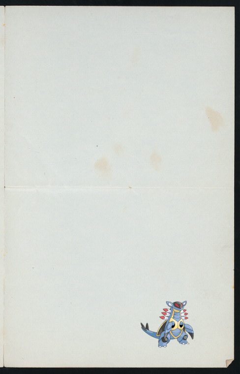
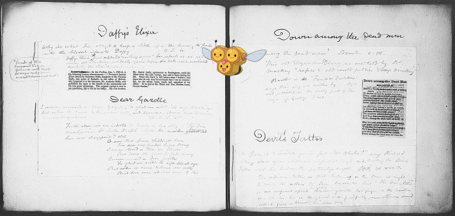

-
 Paras + Document
Paras + Document -
 Phanpy @ Capture of Fort Ticonderoga
Phanpy @ Capture of Fort Ticonderoga -
![Munchlax – [Assiette] (anémone).! http://digitalcollections.nypl.org/items/f003ecc0-c60c-012f-e2b7-58d385a7bc34](media/finding-MCmlTkKB.png) Munchlax | [Assiette] (anémone)..
Munchlax | [Assiette] (anémone).. -
![+ Catlin Settlement [Village]; Lincklaen Business Notices.; Lincklaen [Township] http://digitalcollections.nypl.org/items/40e30ed0-c5f7-012f-f8d0-58d385a7bc34](media/finding-nJpjhAFN.png)
-
Shedinja + [Edmund Burke.]!
-

-
 Armaldo ; Germany, Bavaria, 1850
Armaldo ; Germany, Bavaria, 1850 -
Weepinbell ; Virginia House Restaurant
- 
- 
-
Ninjask @ Lossberg, F.W.
-
Thundurus-Incarnate @ Art industriel : boites et ustensiles de toilette (grandeur d'exécution)!
-
 Ho-Oh | Index..
Ho-Oh | Index.. -
Heliolisk ; Bill of Exchange
-
 Metagross @ U.S. Capitol..
Metagross @ U.S. Capitol.. -
Starmie – Babcock, N., 1846!
-
Gligar | Manville, New Jersey..
-

-

-
Krokorok @ Henri IV Restaurants.
-
 Gothorita + Hotel Astor
Gothorita + Hotel Astor